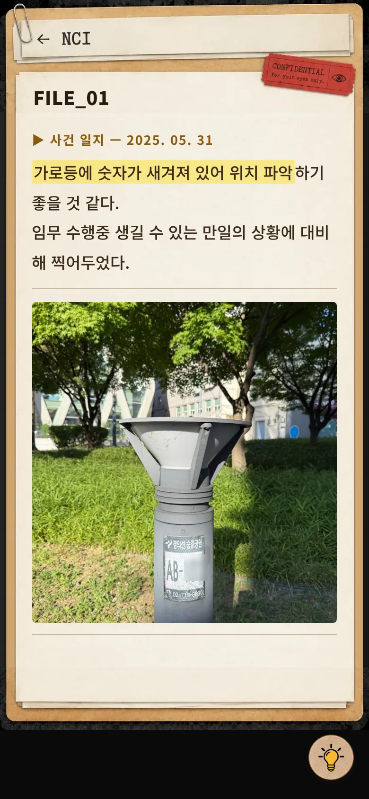
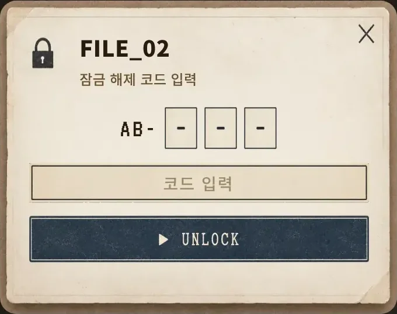

문서 N07-013
플레이 방법
1
홍대입구역 3번 출구에서 접속하세요
로딩이 끝나면 [수사 시작]을 누르고, 오프닝은 화면을 탭해서 넘겨요.
2
첫 화면에서 [MY STORAGE 열람]을 누르세요
문제(파일)는 전부 MY STORAGE 안에 있어요.

!
3
FILE_01부터 순서대로 풀어요
처음엔 FILE_01만 열려 있어요. 파일은 순서대로만 열려요.

!
4
파일을 읽고 현장에서 답을 찾아요
노란 형광펜이 핵심 단서예요. 그 장소에 가서 답을 찾으면, 그 답이 다음 파일의 잠금 코드예요.

!
5
다음 파일을 눌러 코드를 입력해요
AB-처럼 이미 적힌 부분은 빼고 입력해요. 영어는 대소문자 상관없어요.

!
6
막히면 💡 힌트, 지도는 힌트 창 안에
파일 화면 오른쪽 아래 💡 → 힌트 창 오른쪽 위 지도 아이콘. 힌트를 끝까지 열면 정답도 볼 수 있어요.

!
7
그 밖에 알아둘 것
메시지 답장 — 파일에서 메시지를 보내라고 하면 프로필 화면의 메시지에서 답장해요.
카메라 — MY STORAGE 왼쪽 아래 빨간 버튼. 권한은 ‘허용’.
최종보고서 — MY STORAGE 아래. 마지막에 알아낸 정보를 입력해요.
!
주의사항
- 새로고침·창 닫기 금지 — 진행 상황이 사라질 수 있어요.
- 뒤로 갈 땐 게임 화면 왼쪽 위 ←를 사용하세요.
- 걸을 땐 앞을 보고, 확인은 멈춰서 해주세요.
- 보조배터리·데이터·이어폰을 챙겨주세요.